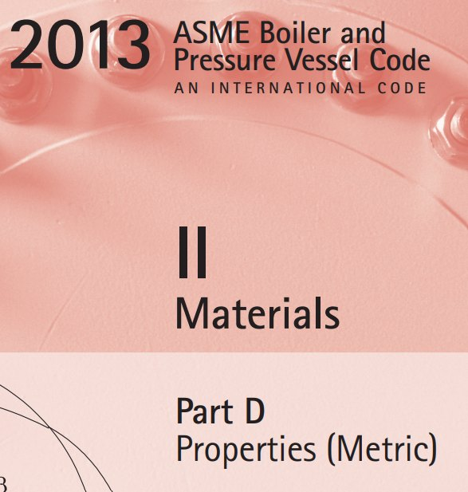
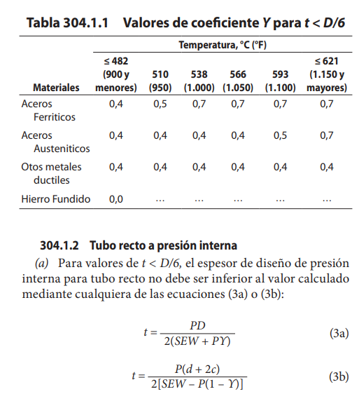
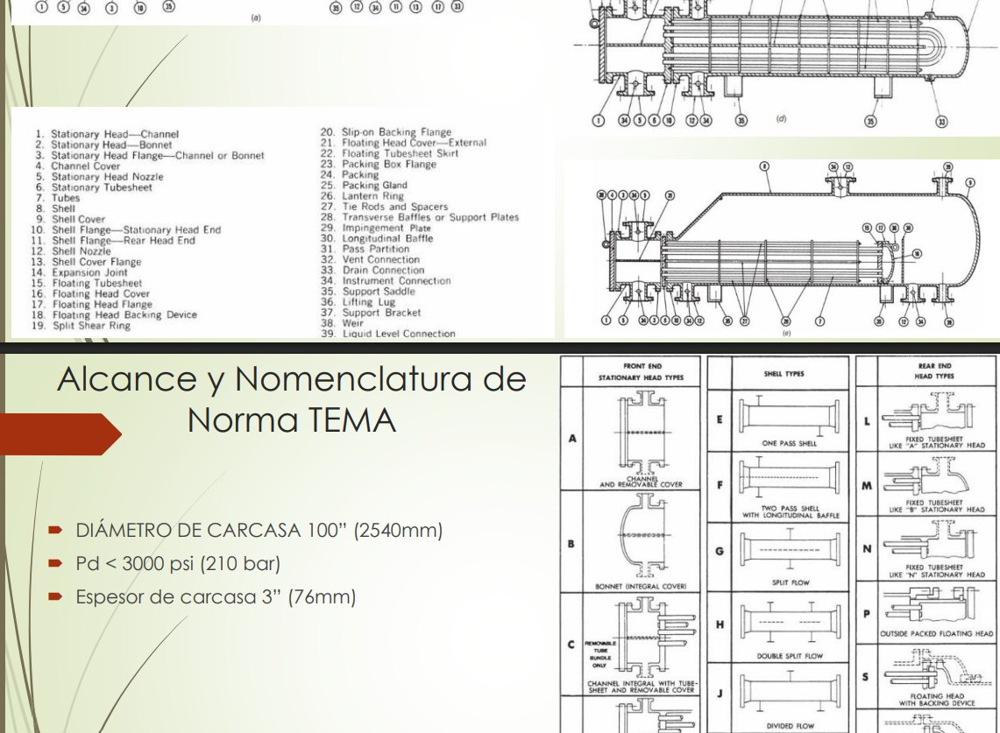
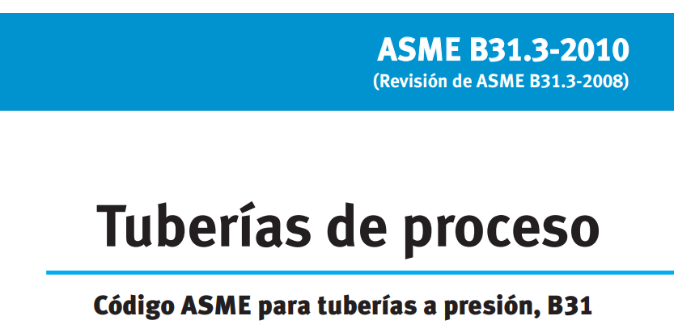
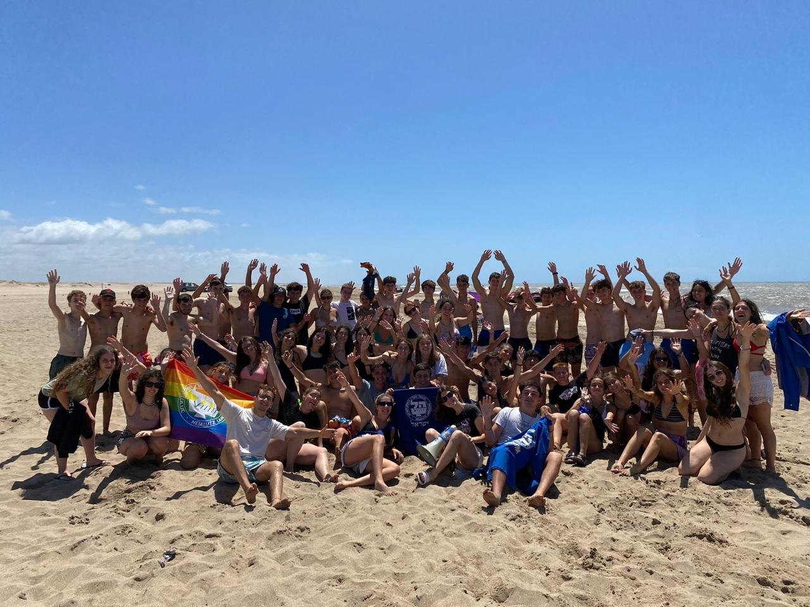
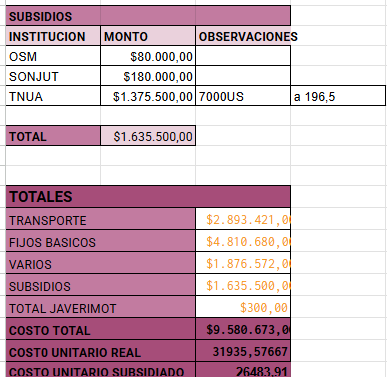
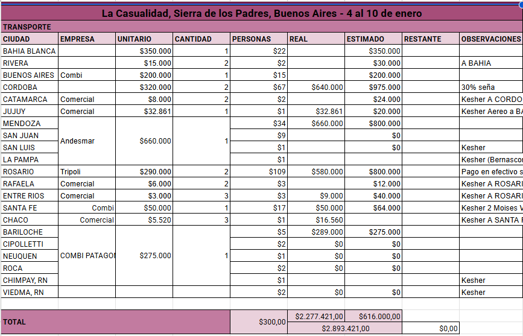
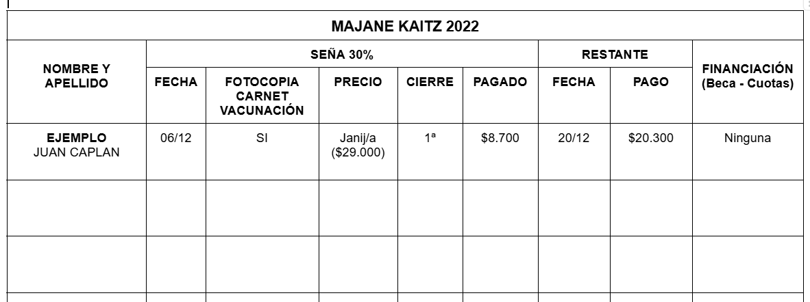

Arts et Métiers
Programme Grande École, double-degree studies. Third-year specialization in nuclear systems engineering, operation and control.
Final-year engineering student in the Arts et Métiers–UNCuyo double-degree programme, specializing in nuclear systems engineering. I apply modeling, control, industrial optimization and rigorous technical methods to complex engineering problems.
Seeking a 6-month final-year internship · Available February 2027

My academic and practical experience covers nuclear-oriented energy studies, power electronics, statistical modeling, industrial simulation, manufacturing and project planning. I am particularly interested in contributing to technical operations and engineering projects in the nuclear industry.
Hands-on engineering, technical communication and responsibility for financial and logistical operations.
Solar PV installation company · Field operations
Energiu designs and installs photovoltaic systems for homes and businesses in Mendoza. I joined the installation side as a methods intern. I spent the first weeks on site with the crews, and then used what I had seen there to write down how an installation should be carried out and to reorganise the equipment the teams take to each job.
On the management side, I helped turn the company’s commercial strategy into a balanced scorecard: objectives, the initiatives linked to each one, and the indicators used to follow them. The poster below is one of the pieces produced from that work.


Assisted instructors during practical classes on industrial equipment and installations, helping students understand technical principles and engineering applications. Supported the explanation and use of ASME codes and helped communicate complex technical material in a clear, structured manner. Most sessions used ASME B31.3 (process piping), ASME BPVC Section II and the TEMA standard for heat exchangers.




Served on the leadership team of a non-profit educational youth center, with responsibility for financial administration and event logistics. Managed an annual operating budget of approximately €70,000, including financial planning, expenditure monitoring and payment tracking. Participated in sponsor and donation outreach and coordinated logistical arrangements for national events bringing together more than 150 participants.




Featured projects are ordered by their relevance to complex energy and nuclear engineering: power systems, engineering analysis, optimization, industrial operations and manufacturing. Reports document team work unless specified.
Power systems, nuclear heat recovery and energy process engineering

Thermodynamic analysis of options for recovering residual heat from nuclear systems, addressing energy value, economic potential and associated safety considerations.

Modeling and evaluation of classical, hybrid and optimization-based control strategies, including simulated annealing and genetic algorithms.

55-page collaborative industrial study of lithium supply chains, extraction routes, equipment, applications and environmental impacts.
Model-based reasoning, uncertainty, statistical methods and quantitative decision-making

Logistics system modeling with a robotic sorting station and performance KPIs, supported by MATLAB analysis and FlexSim simulation.

Statistical estimation, goodness-of-fit and independence testing, multiple regression and variability reduction.

Four-strategy comparison for a simulated 6,120-unit annual production plan. Solver minimized total modeled costs under workforce, overtime and inventory constraints.
Planning complex work, resources and supply chains

Resource-loaded scheduling, critical path analysis, PERT, acceleration and Monte Carlo risk modeling for capacity expansion.

BOM design, lead-time and inventory modeling, planned purchasing and manufacturing orders using POM-QM.
Technical design, process control, fabrication and quality

Casting allowances, riser and gating design, sand molding, visual inspection and mass yield assessment.

Hands-on work on resistance spot welding, tensile testing, metallography, riveting and forging in the manufacturing lab.

Kinematic design, motion-law comparison in Python, CATIA modeling and dynamic validation of a valve-actuation cam.

CAD, machining and assembly participation, plus team task planning on a student vehicle project.
User-oriented technology and teamwork
Top-two Social & Environmental Impact finalist at ITBA’s Bootcamp Trama. Created a smartwatch pictogram concept and pitched the business case to investors.
Spanish — Native
French — C1
English — C1 · TOEIC 965/990
Programme Grande École, double-degree studies. Third-year specialization in nuclear systems engineering, operation and control.
Industrial Engineering · GPA 8.44/10


Listening 495/495 · Reading 470/495 · C1
AZ-900 · Exam passed
Intermediate–advanced training, 2024
Completed course, October 2024
Cambridge English: First · Grade B
Finalist · Bootcamp Trama
I am looking for a six-month final-year internship beginning in February 2027, where I can contribute to technical and industrial projects.
martinkotlik12@gmail.com